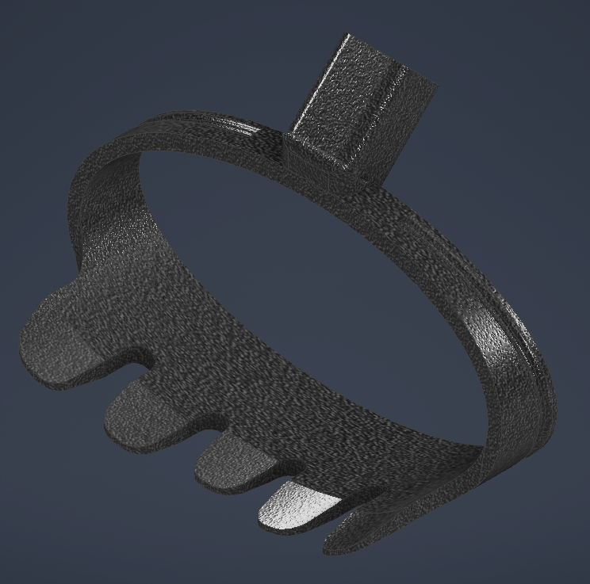

- Design and CAD a mechanical end effector that mounts to a Quanser Arm.
- Develop software to determine products to be packaged, and for control of the robotic arm's movement.
- Engineer a system that authenticates users, scans packages, computes costs, and packs them efficiently.
figure 1 - The Quanser Arm (Qarm)
My Role
- Lead the Python programming by assembling and testing our team functions to optimize performance and ensure proper documentation.
- Managed the software verification and integration process by debugging the overall system, guaranteeing a working product.
- Advised on the mechanical design by proposing feautures from my individual Autodesk Inventor CAD model.
figure 1 - A snippet from my lookup_products() function
Reflection
- Questioning my initial design approach caused me to pivot to a simpler, and more reliable final CAD model.
- If I could redo this project, I would focus more on time management to make sure all features of the project were tested and working on time.
- Overall, I learned much about teamwork in an engineering context, and I can't wait to apply these skills in future projects!
figure 1 - A photo of the team :)
1P13 - Project 3
Objective
- Make something that could be useful to our Client, who suffers from reumatoid arthiritis.
- Take into account certian constraints such as cost,portability, and user-friendliness.
- Design, prototype, and test what you make so that it meets the client's needs and constraints.
Objective - In Depth
Our client, is a wheelchair user who experiences limited hand functionality and reduced joint strength due to rheumatoid arthritis. He relies on his service dog, but struggles with standard dog waste collectors since they require too much grip tension for his hand joints to comfortably operate. My team and I were tasked with engineering a new mechanical scooper that completely bypassed the need for fine finger dexterity.
The initial core objective was to design a system that allowed Mark to operate the scooping claw using breader strength of his whole arm rather than pinching his fingers. After discussing this idea with my team, we decided the best thing to do was purchase a pole rather than desinging one from scratch, since it would save us a lot of time and allow us to focus on the actual scooping mechanism. We needed to balance all of these requirements while staying within a strict $100 budget constraint.
figure 1 - our client
Role
- I was tasked with researching the best materials for the task, and I found PLA to be the best!
- I conducted tests on our final prototype, to ensure it was functioning properly.
- I contributed to the final design by suggesting features such as a telescoping pole, and bag clip.
Role - In Depth
I led the material research and analytical prototyping for this project. Initially, I looked at materials like Carbon Fiber and Aluminum 6061 for their strength to weigh tratios and natural vibration dampening. However, to keep the project cost effective and accessible, I determined that standard PLA was the best for our project since it provides the necessary durability and lightweight properties while remaining under our budget constraint.
Moving to Autodesk Inventor, I focused on designing the physical mechanism. I wanted to elimated the standard trigger entirely, Instead, I modeled a sliding handle mechanism; the client could simply pull his whole arm backward along a sliding bar to close the scooper, drascialyl reducing the tensile force require. As I meanted in objectives, we did not move forward with this since we bought a telescoping pole to save time.
During the conceptial phase, I explored a telescoping stick to solve the portability constraint. But visualising how it would fit into my original prototype held me back from pursuing the idea. I scrapped desiging a telescoping pole, and made a foldable design instead. THis pivot was a success, maintaining a low storage volume while ensuring the internal string mechanism operatored smoothly.
THis challenged reshaped my perspective on engineering design. I learned that isolating features during brianstorming, like focusing purely on portability without considering how the mechanical actuation would function alongside it, can lead you down the wrong path. Moving forward in my career, I will prioritize simulating the physical system of my idea before actually shipping it into production, ensuring time and budget are spent on viable physical solutions ratehr than failed concepts.
figure 1 - Our final CAD prototype

Reflection
- I learned that early iteration is key to a successful project, since it allows for flexibility with time.
- Communication is something we prioritized as a team, and it led to flawless integration since we were all on the same page.
- If I could redo this project, I would make sure to attack challenges as soon as they come up, since it saves a lot of time in the future.
Reflection - In Depth
With a team of 5 individuals, we were tasked with engineering something for a client named Mark. As a team, we discussed our thoughts on the information provided on Mark, and decided on designing a dog poop scooper to help him with his struggles in picking up after his dog. The first thing we prioritized was thorough research. With the given information, such as the fact that he struggles to grip his current scooper due to the low amount of tension, we wanted to find the best materials for the challenge. I was tasked with researching materials and found that using standard PLA, which is a renewable thermoplastic used for 3D printing, would be best for the end of the scooper. PLA is lightweight and extremely customizable, which are important properties for our project. We went over our research as a team, and then started working on the physical product. We went through around 3 CAD based prototypes in total, and the design improved with each prototype. One challenge we faced through iteration was deciding how we would go about deciding on the pole for our mechanism. We spent a lot of time speaking about it as a team, and decided the best thing to do was buy a durable telescoping pole online, that way we could spend more time on the actual end of our mechanism. The outcome of communicating and testing early was having a lot more time to finalize our project in the future. By overcoming the obstacle of pole selection early on, we had plenty of time to attack other challenges of the project. Honestly, if we had done anything different such as delaying our decision making I think we wouldn’t have as much time to actually test the functionality of our mechanism, since we would be so caught up with deciding on how to approach the pole. From this experience, I learned that communicating effectively as a team leads to things getting done much faster. This is extremely valuable since good time management is an important skill to have as an engineer. In my future endeavors, I plan on prioritizing communication with the team, early iteration, and thorough research to save time in the future.